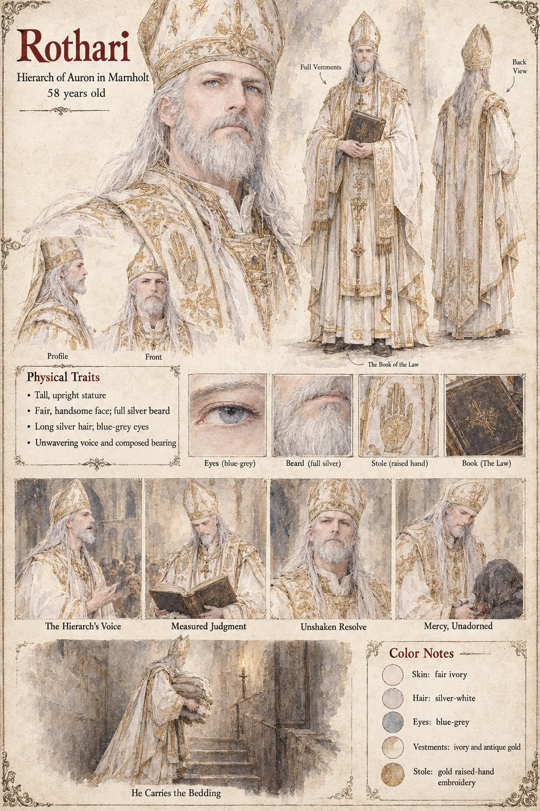

Rothari
Hierarch of Auron in Marnholt · presides over the Ordeal of the Third Stroke · 58 years old by his sheet
The Hierarch of Auron in Marnholt, the Father's high priest: Auron governs heaven, law, kingship, judgment and oaths in the Threefold Crown, and Rothari has presided eleven times over the Ordeal of the Third Stroke on the black oak Altar of Oaths. The other pages give him three moments. He preaches before a full cathedral on the text that Solan's fire is not to be addressed by strangers, and Waldrada's Nephew carries the sermon to Tomobe no Higaide at the door of the ox-stall. At the Ordeal Ansbert tells him that both blades are Whole and that he cannot say which is the better, and he finds, in the Eleventh Clause of the Third Book that Chlodio wrote, that if both blades are sound the cause is not for the altar. And after the Law of the Oath-Blade is repealed he declares void the verdict of forsworn that the Landing's Priest gave against the stranger of Case 2231, with the words He was merely early. The publication notes add that he preaches against the Low Forge and shelves the Guild's referral of it as a case of sorcery (Wolfram's page has the masters vote to make it).
His sheet adds a scene the other pages lack, He Carries the Bedding: the Hierarch in full vestments, mitre and all, going down a dark stair with a great bundle of bedding in his arms. The publication notes say that the bedding is the household's and the stair the almonry stair, and that he carries it up; the sheet draws the stair going down, and the page keeps both. Its expression panels run The Hierarch's Voice, Measured Judgment, Unshaken Resolve and Mercy, Unadorned. Written from the sheet, from what the other Case 4181 pages and the Threefold Crown lore already say, and from the character notes in the case's publication-prep file; the manuscript itself was not to hand. His age of 58, tall upright stature, fair handsome face, full silver beard, long silver hair, blue-grey eyes, ivory and antique-gold vestments, stole with a gold raised-hand embroidery and the Book of the Law are the sheet's own.
“He was merely early.”
Appears In

Related Subjects


Related Records

In the bedchamber of the dying King Theudebald lies on four pillows with a sword on the coverlet between his hands and his daughter Adalgund's, the window open on the river; the door has been taken off its hinges by a carpenter and stands in the corridor, and in the empty frame the Duke, Waldo, sits on a stool looking at his brother while the Chancellor Ricbert and the Hierarch Rothari wait at the corridor's end.

Over the black oak Altar of Oaths Theodard of Lorrenne, the Duke's champion, and Ebbo of Eschwin, the Countess's, cross blades flat to flat through thirteen strokes while Rothari holds the Book of the Law open at arm's length; Adalgund stands at the altar steps, Ansbert by the north pillar in his blue sash, and far down the nave, in the porch between the two pages who hold the west doors open, the Duke never takes his eyes from the doorway.